実在のサイト
公式サイト
SYNC north
札幌のナイトクラブ／ライブハウスの公式サイト。設計・デザイン・実装を担当しました。
TENKA LAB
札幌
SAPPORO
スマホで見やすいお店のページから、予約の受付、毎日の売上の管理まで。まとめて1か所にご相談いただけます。
作品例・デモは架空のお店です。制作実績の2件は実在のサイトです。
RESULTS
実際に公開されているサイトです。下の作品例（架空）とは別です。
実在のサイト
公式サイト
札幌のナイトクラブ／ライブハウスの公式サイト。設計・デザイン・実装を担当しました。

実在のサイト
公式サイト
経営支援サービスの公式サイト。3Dで動く見せ方を含め、設計・デザイン・実装を担当しました。
SAMPLES
店名・人名・数字はすべて架空です。実在のお店の実績ではありません。デモは画面の中だけで動き、入力しても外には送られません。
WEBSITE
作品例・架空のお店
予約LP ／ 焼鳥店
宴会・接待の予約を、スマホでその場で受けるページ
本番にするときは：お店の写真・文章に差し替え、予約の受け取り先と二重送信の防止を足します

作品例・架空のお店
ホームページ ／ 美容室
初めての方の不安を減らし、予約につなげるホームページ
本番にするときは：お店の写真・文章・料金に差し替え、予約の窓口とつないで公開します
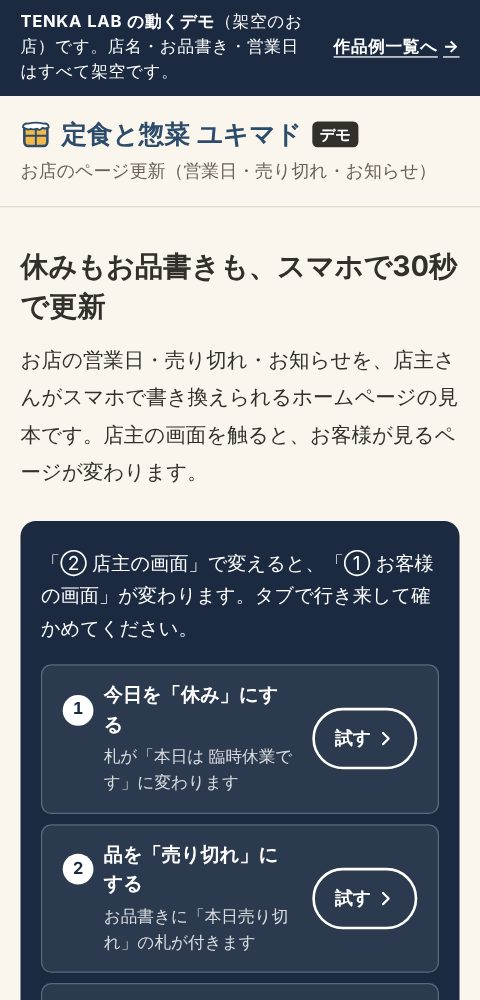
デモ・架空のお店
お店のページ更新 ／ 定食・惣菜
休み・売り切れ・お知らせを、店主さんがスマホで書き換えられるページ
本番にするときは：公開中のページへの反映、公開前の確認画面、変更の履歴と元に戻す機能を足します
BOOKING
デモ・架空のお店
チャット窓口 ／ 整体院
営業時間外の質問に答え、予約まで案内するチャット窓口
本番にするときは：お店の情報で答えを作り直し、予約の受け取り先とのつなぎを足します

デモ・架空のお店
予約・問い合わせ管理 ／ 教室
電話・LINE・メールの予約を1つの画面にまとめる受付管理
本番にするときは：共有の保存先とログイン、同じ枠の取り合いと二重予約の防止を足します
OFFICE

デモ・架空のお店
売上ダッシュボード ／ カフェ
今月の売上・目標の進み具合・利益を、スマホでひと目で
本番にするときは：売上データの取り込み口と、同じデータを2回入れても増えない仕組みを足します

デモ・架空のお店
請求書の自動作成 ／ カフェ
納品の明細から、取引先ごとの請求書をボタン1つで
本番にするときは：重複しない請求番号と発行の履歴、取消・返金と、お店と税理士さんで決めた税区分に合わせた計算を足します

デモ・架空のお店
勤怠の自動集計 ／ 飲食・小売
3店舗・8人の打刻から、月の集計と出勤簿を自動で
本番にするときは：打刻の本人確認、上長の承認、雇用条件ごとの計算の決まりを足します
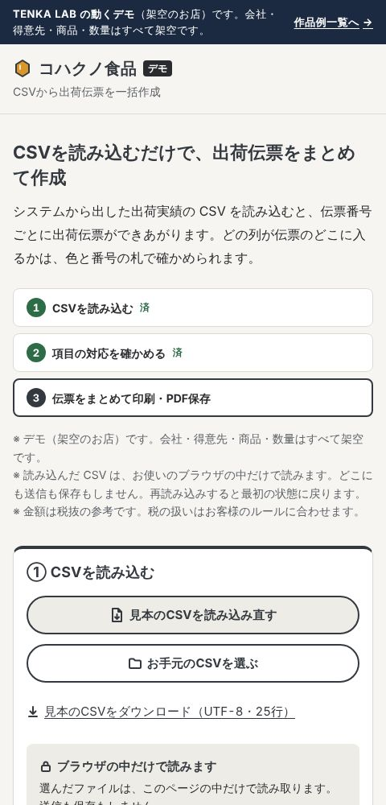
デモ・架空のお店
CSVから伝票を一括作成 ／ 卸・倉庫・小売
システムのCSVを読み込むだけで、出荷伝票をまとめて印刷
本番にするときは：お手元のCSVの文字コード・件数・重複した番号に合わせ、取込前の確認を足します
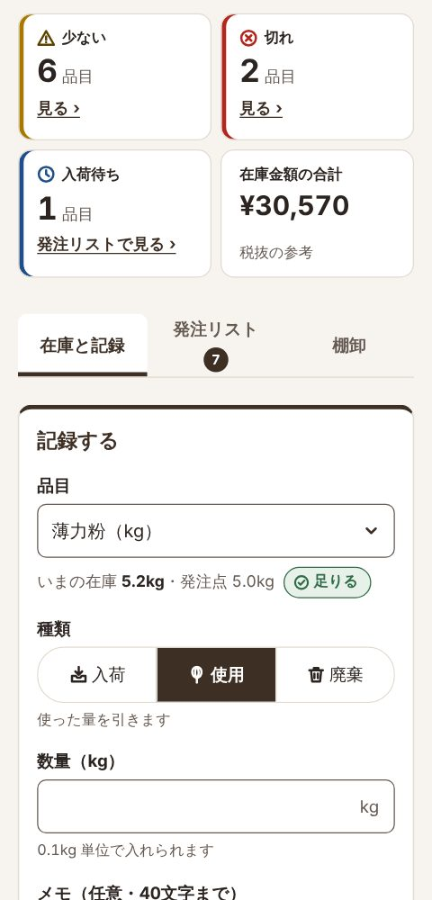
デモ・架空のお店
在庫・発注の管理 ／ 飲食・菓子・小売
足りない材料が色で分かり、発注リストが自動でできる
本番にするときは：共有の保存先とログイン、複数人が同時に記録してもずれない仕組みを足します
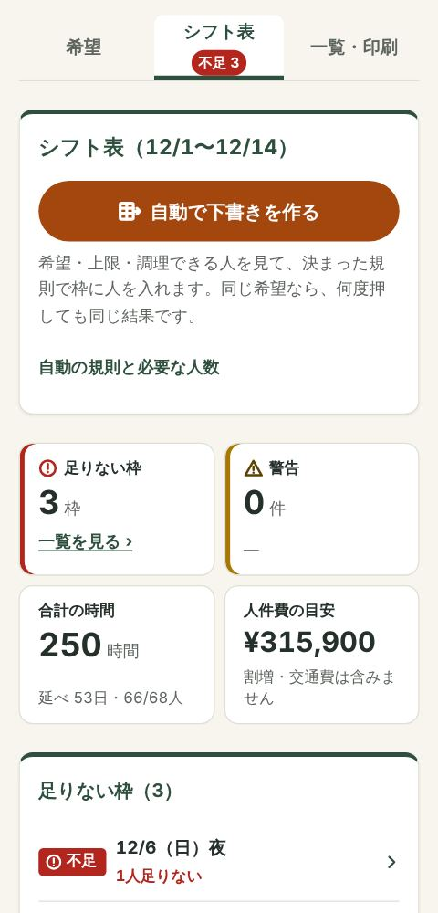
デモ・架空のお店
シフト表づくり ／ 飲食・小売・サービス
スタッフの希望から下書きを自動で作り、足りない枠が色で分かる
本番にするときは：スタッフごとのログイン、雇用条件に合わせた上限の決まり、変更の履歴を足します
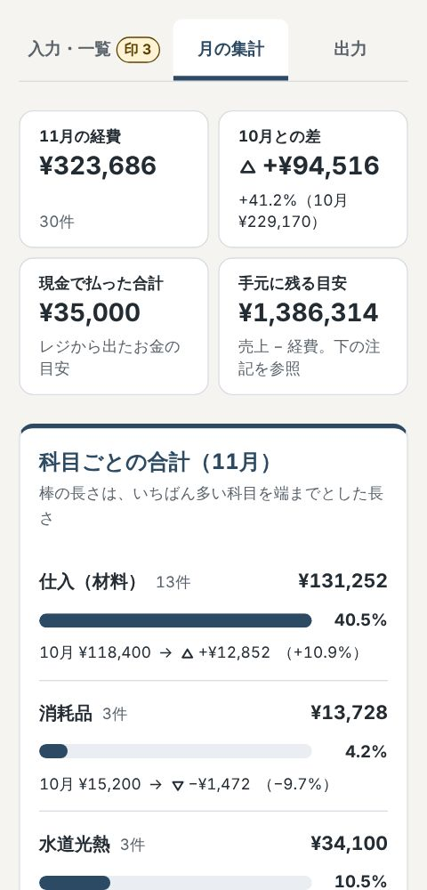
デモ・架空のお店
経費の記録と月の集計 ／ 飲食・小売・サロン
レシートをその場で入力し、科目ごとの合計と税理士さん用のCSVが自動で出る
本番にするときは：共有の保存先とレシート画像の保管を足し、科目の分け方を税理士さんに合わせます

デモ・架空のお店
予約注文の受付と仕込み表 ／ 洋菓子・パン・惣菜
予約を入れると残り数が減り、受け取り日ごとの仕込み数と受け渡し表が自動で出る
本番にするときは：共有の保存先、残り1個を同時に予約されない仕組み、受付番号と取消・変更を足します

デモ・架空の会社
ホームページと概算 ／ 工務店・リフォーム
場所と広さを選ぶと目安の金額と工期が出て、そのまま相談の文に入る
本番にするときは：会社の単価表・写真・文章に差し替え、相談の届け先とつないで公開します

デモ・架空のお店
スタンプカード ／ パン屋・飲食・美容
紙のカードの代わりにスマホの会員証。お店は金額を入れて押すだけで、特典も記録に残る
本番にするときは：会員のログイン、不正な付与と特典の二重使用の防止、押した履歴を足します

デモ・架空のお店
テーブル注文 ／ 定食屋・居酒屋・カフェ
お客様が席のスマホで注文し、厨房の一覧にそのまま届く。品切れもすぐ注文画面に出る
本番にするときは：共有の保存先、通信が切れても注文が重ならない仕組み、取消・変更を足します
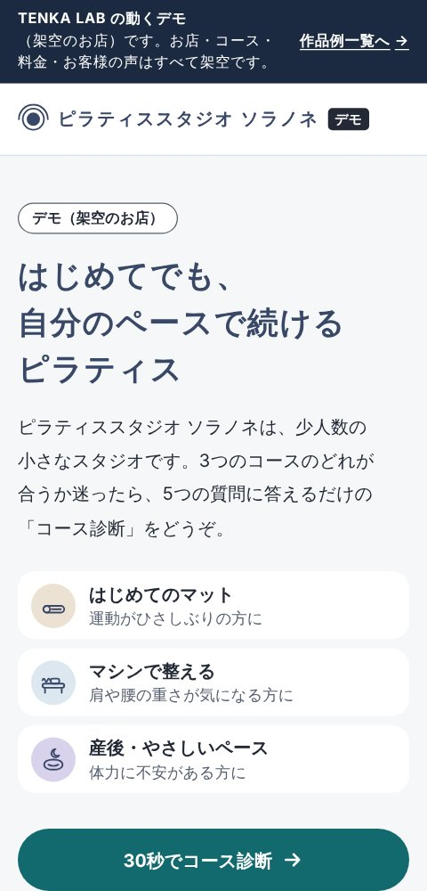
デモ・架空のお店
診断つきのLP ／ 教室・サロン・整体
5つの質問で合うコースが分かり、そのまま体験レッスンの申し込みへ進める
本番にするときは：お店のコース・写真・文章に合わせ、申し込みの届け先とつないで公開します
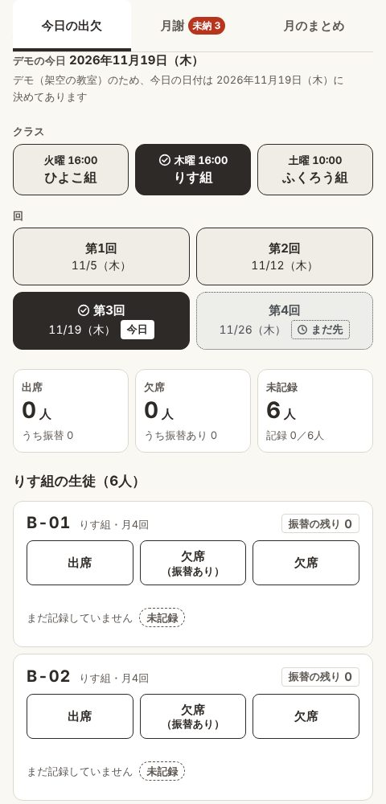
デモ・架空の教室
出欠と月謝の管理 ／ 習い事・塾・教室
出欠はボタンで、振替の残りは自動で数える。月謝の未納の人数と金額がひと目で分かる
本番にするときは：先生ごとのログインと権限、記録の履歴、生徒の情報の削除・訂正の手順を足します
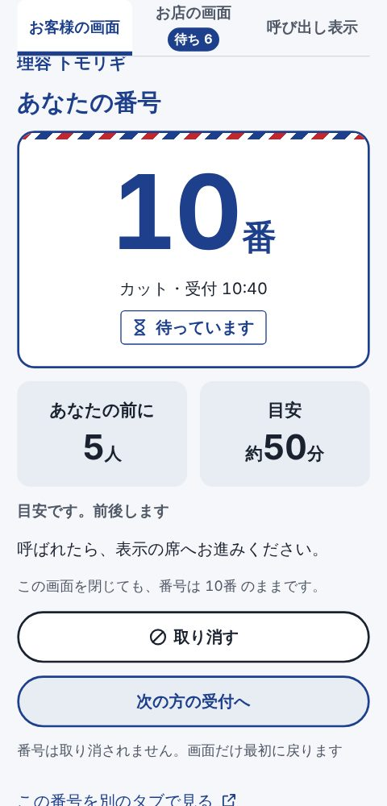
デモ・架空の理容室
順番待ちの受付と呼び出し ／ 理容室・飲食・整体
番号を取ると前の人数と待ち時間の目安が出る。お店は席ごとに呼び、待合の画面に番号が大きく出る
本番にするときは：共有の保存先、番号の二重発行の防止、順番が近づいたときのお知らせを足します
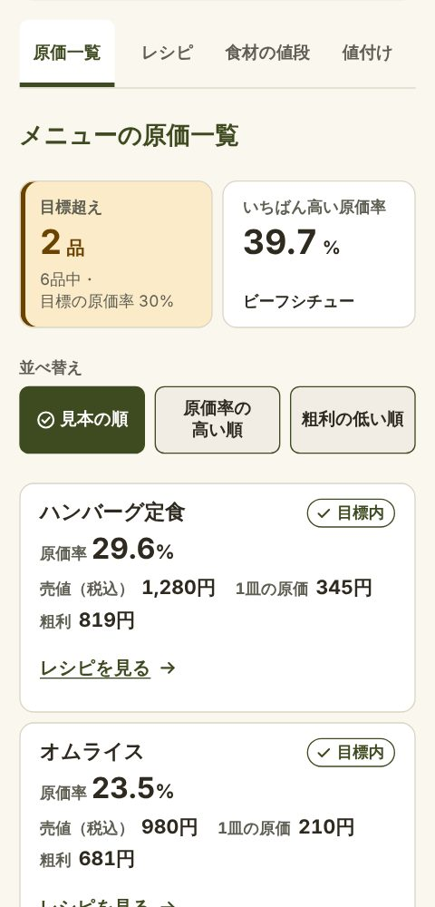
デモ・架空の洋食店
メニューの原価計算と値付け ／ 飲食店・カフェ・お弁当
仕入れ値を変えると影響のあるメニューの原価率がすぐ分かる。目標の原価率から値上げの目安も出る
本番にするときは：お店の食材・レシピに合わせ、共有の保存先と仕入れ値の変更の履歴を足します

デモ・架空の美容室
顧客カルテと再来店のお声がけ ／ 美容室・サロン・整体
前回の色の番号とメモがすぐ出る。次の来店の目安を過ぎた方が、過ぎた日数の多い順に並ぶ
本番にするときは：スタッフのログインと権限、誰がいつ直したかの記録、お客様の情報の同意・削除・訂正の手順を足します

デモ・架空の喫茶店
お客様アンケートの集計 ／ 飲食店・カフェ・サロン
項目ごとの平均と分布、前の月との差がすぐ出る。点数の低い声から順に読んで対応できる
本番にするときは：回答の受け取り口と共有の保存先、同じ回答が2回入らない仕組みを足します
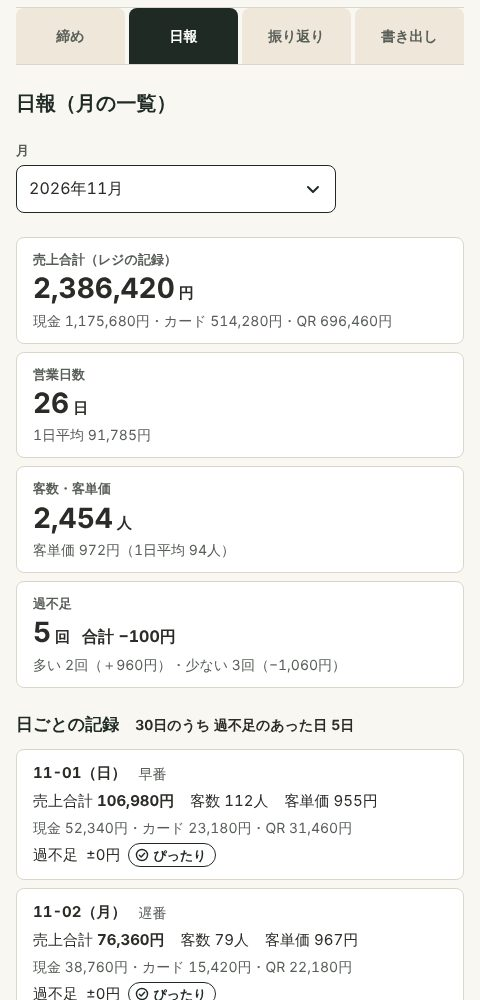
デモ・架空のおむすび店
レジ締めと日報 ／ 飲食店・小売店
お札と硬貨の枚数を入れるだけで、合計とレジの記録との過不足が出る。締めた分が月の日報と曜日ごとの振り返りになる
本番にするときは：共有の保存先、締めた日を後から変えられない仕組み、訂正の履歴を足します

デモ・架空のそば店
衛生管理の記録 ／ 飲食店
冷蔵庫・冷凍庫の温度と毎日の衛生のチェックをスマホで記録。基準外はその場で知らせ、月の記録表を印刷できる
本番にするときは：記録した担当者の名前、後から書き換えられない仕組み、記録の長期保存を足します

デモ・架空のラーメン店
アルバイト募集のページ ／ 飲食店
求人のページで、働きたい時間を選ぶと深夜の割増と交通費を含めたお給料の目安が出る
本番にするときは：お店の時給・手当の決まりに合わせて計算を直し、写真・文章と応募の受け付け方を足します
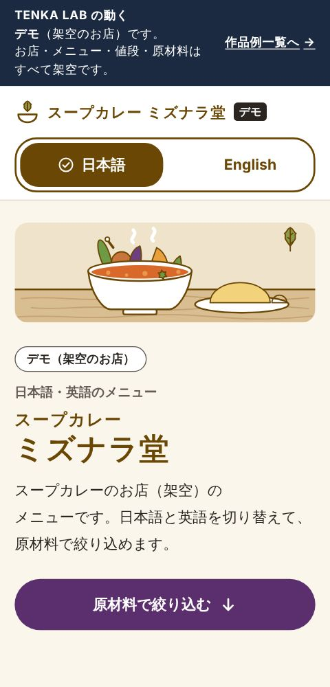
デモ・架空のスープカレー店
日本語・英語のメニュー ／ 飲食店
メニューを日本語と英語で切り替え、避けたい原材料を選ぶと使っていない品だけを見られる
本番にするときは：原材料の表示に責任者の確認と更新の履歴を足し、英文の確認のしかたを決めます
売上管理シート（Excel）など、ほかの作品例は作品例の一覧にあります。
FLOW
この場でご相談今のお店の困りごとを5分ほどお聞きします
トップ画面の試作を1枚、無料でお店に合わせた試作をお作りして、お店の方だけにお見せします
お見積もりは無料内容が決まってから、お見積もりをお出しします。無理にはおすすめしません
CONTACT
トップ画面の試作1枚と、お見積もりは無料です。ご不要でしたら、この場でお断りいただいて大丈夫です。